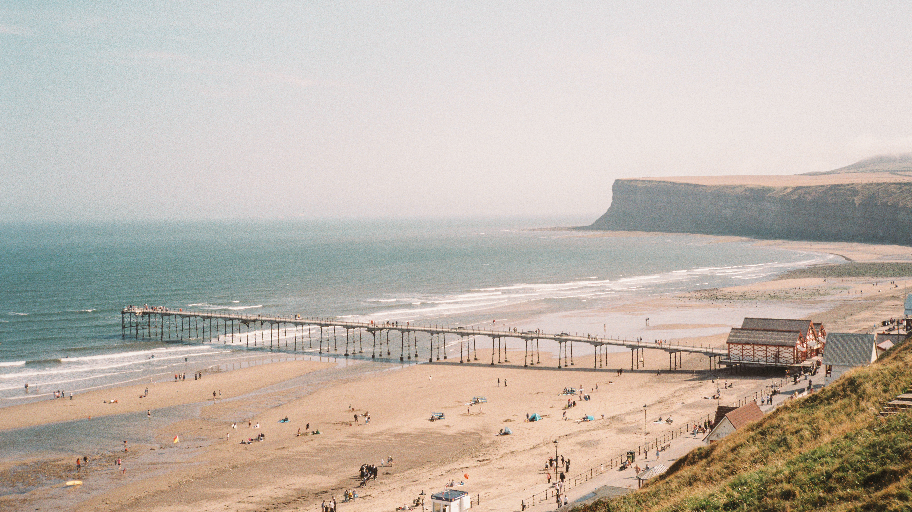

PeiyangZeng
Doctoral Researcher at the University of Sheffield. I study electrical engineering, specialising in the things that turn the wheels of your electric car, or your electric plane (if you happen to own one). I also photograph places.

About
I make things spin. Before that, I made things float.
These days I spend most of my time persuading copper, steel and magnets to cooperate, and teaching electric motors to keep calm and carry on when part of them breaks. In an electric car, a faulty motor ruins your afternoon. In an electric plane, it ruins considerably more, so we would really rather it kept spinning. Before that, I spent several years helping trains levitate, which is exactly as fun as it sounds and involves more liquid nitrogen than you would expect.
The longer version. I am a doctoral researcher in the School of Electrical and Electronic Engineering at the University of Sheffield, working on fault-tolerant permanent magnet machines for transport electrification: machines that can keep operating safely after a fault, for applications where stopping is not an option, from electric vehicles to more-electric aircraft.
Before Sheffield, I studied at Southwest Jiaotong University (2017–2024), where my undergraduate degree was in railway vehicle systems. My master's research focused on high-temperature superconducting (HTS) pinning maglev, in particular measuring permanent magnet guideway (PMG) irregularity and its effect on levitation dynamics. Later, I moved on to the electromagnetic analysis and conjugate heat transfer (CFD) simulation of a double-sided long-stator permanent magnet linear synchronous motor for an ultra-high-speed maglev test model aiming for 1,500 km/h, and that is where my interest shifted towards transport electrification. My broader interests include applied electromagnetics, electromechanical energy conversion and dynamic analysis.
Publications
- 2025
- 2025
- 2023
- 2023
Full list on ResearchGate
Photography
I used to do photography. Then life happened.
I came back to photography on film, as a small protest against the digitalisation of everyday life. It is entirely possible that this is simply a consumerist fantasy, lovingly packaged by late capitalism and sold back to me one roll at a time. I am choosing not to think about it too hard.
Saltburn-by-the-Sea
August 2026, Ricoh 500RF / Kodak Gold 200
Tree heather of Madeira
September 2026, Ricoh 500RF / ProImage 100